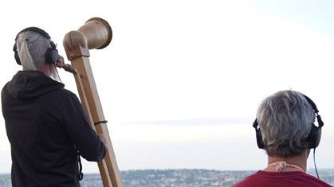

A multimedia performance connecting Windhoek (Namibia) and Stuttgart (Germany) via radio and internet transmission. The work explores transhistorical telecommunications, ancestral memory, and the colonial legacy embedded in contemporary satellite and broadcast infrastructures. Through soundwalks, spoken word, music, and live radio, a dialogue unfolds across continents and time.
Space Has Become a Crowded Place
Theater Rampe Stuttgart, Goethe-Institut Windhoek, 2023
